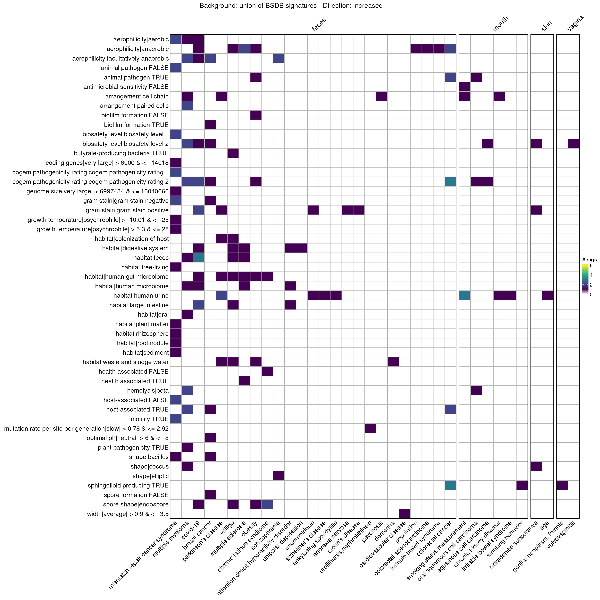
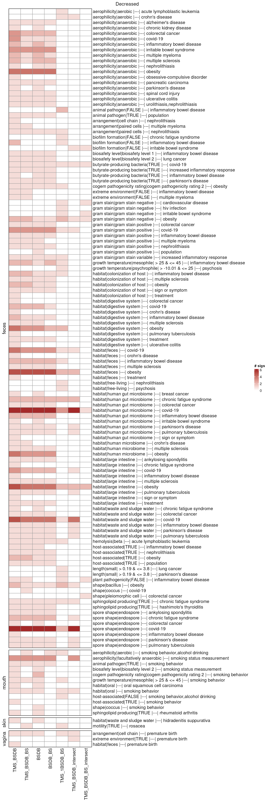
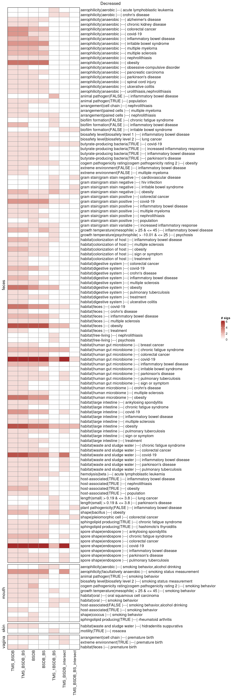
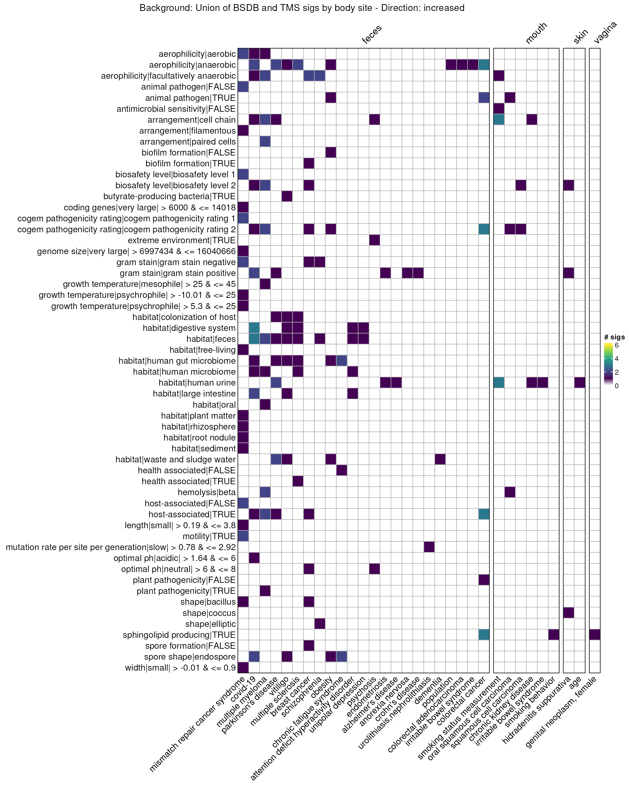
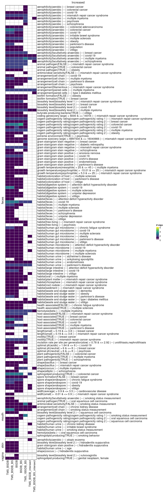
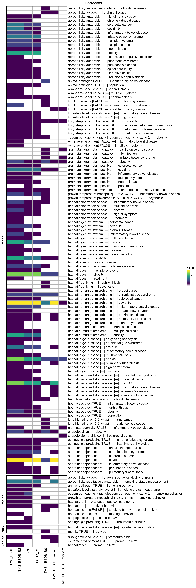

High-throughput ORA with BSDB signatures
Source:vignettes/articles/bsdb_signatures.Rmd
bsdb_signatures.Rmd
library(bugphyzzAnalyses)
library(bugphyzz)
library(bugsigdbr)
library(dplyr)
library(purrr)
library(tidyr)
library(ComplexHeatmap)
library(gridExtra)
library(ggplot2)
## Define some variables
body_sites <- c("skin", "vagina", "mouth", "feces")
ranks <- c("genus", "species")Data
TypicalMicrobiomeSignatures:
tms <- importTMS() |>
filter(`Age group` == "adult")
glimpse(tms, 50)
#> Rows: 9,636
#> Columns: 6
#> $ `Age group` <chr> "adult", "adult", "adult", …
#> $ Rank <chr> "genus", "genus", "genus", …
#> $ `NCBI ID` <int> 1912216, 1912216, 1912216, …
#> $ `Taxon name` <chr> "Cutibacterium", "Cutibacte…
#> $ `Body site` <chr> "skin", "vagina", "mouth", …
#> $ Prevalence <dbl> 0.9647577093, 0.0631578947,…BugSigDB:
bsdb_doi <- "10.5281/zenodo.10627578" # v1.2.1
# bsdb_doi <- "10.5281/zenodo.10407666" #v1.2.0
# bsdb_doi <- "10.5281/zenodo.6468009" #v1.1.0
bsdb <- importBugSigDB(version = bsdb_doi)
bsdb <- bsdb |>
filter(`Host species` == "Homo sapiens") |>
filter(!is.na(`Abundance in Group 1`)) |>
filter(!is.na(`Body site`)) |>
filter(`Study design` == "case-control" ) |>
filter(
!grepl("(child|infant)", `Group 1 name`, ignore.case = TRUE)
)
dim(bsdb)
#> [1] 1369 50BugSigDB subsets by body site:
uberon <- getOntology(onto = "uberon")
body_sites <- unique(tms$`Body site`)
bsdb_subsets_by_bodysite <- vector("list", length(body_sites))
names(bsdb_subsets_by_bodysite) <- body_sites
for (i in seq_along(bsdb_subsets_by_bodysite)) {
if (body_sites[i] == "skin") {
bsdb_subsets_by_bodysite[[i]] <- bsdb |>
filter(grepl(body_sites[i], `Body site`, ignore.case = TRUE))
} else {
bsdb_subsets_by_bodysite[[i]] <- subsetByOntology(
bsdb, column = "Body site", term = body_sites[i], ontology = uberon
)
}
}Bugphyzz:
bp <- importBugphyzz()
names(bp)
#> [1] "aerophilicity"
#> [2] "antimicrobial resistance"
#> [3] "arrangement"
#> [4] "biosafety level"
#> [5] "cogem pathogenicity rating"
#> [6] "disease association"
#> [7] "gram stain"
#> [8] "habitat"
#> [9] "hemolysis"
#> [10] "shape"
#> [11] "spore shape"
#> [12] "animal pathogen"
#> [13] "antimicrobial sensitivity"
#> [14] "biofilm formation"
#> [15] "butyrate-producing bacteria"
#> [16] "extreme environment"
#> [17] "health associated"
#> [18] "host-associated"
#> [19] "hydrogen gas producing"
#> [20] "lactate producing"
#> [21] "motility"
#> [22] "plant pathogenicity"
#> [23] "sphingolipid producing"
#> [24] "spore formation"
#> [25] "coding genes"
#> [26] "genome size"
#> [27] "growth temperature"
#> [28] "length"
#> [29] "mutation rate per site per generation"
#> [30] "mutation rate per site per year"
#> [31] "optimal ph"
#> [32] "width"Signatures
BugSigDB signatures:
directions <- c("increased", "decreased")
bsdb_sigs <- vector(
mode = "list",
length = length(body_sites) * length(ranks) * length(directions)
)
counter <- 1
for (i in seq_along(body_sites)) {
for (j in seq_along(ranks)) {
for (k in seq_along(directions)) {
myDF <- bsdb_subsets_by_bodysite[[i]] |>
filter(`Abundance in Group 1` == directions[k])
sigs <- getSignatures(
df = myDF,
tax.id.type = "ncbi", tax.level = ranks[j],
exact.tax.level = FALSE, min.size = 5
) |>
discard(~ length(.x) < 5)
if (!length(sigs)) {
counter <- counter + 1
next
}
bsdb_id <- sub(
pattern = "^(bsdb:[0-9]+/[0-9]+/[0-9]+)_.*$",
replacement = "\\1",
x = names(sigs)
)
pos <- map_int(bsdb_id, ~ which(myDF$`BSDB ID` == .x))
new_sigs_names <- paste0(
body_sites[i], "-%-%-", ranks[j], "-%-%-", directions[k], "-%-%-",
tolower(myDF$Condition[pos]), "-%-%-",
names(sigs)
)
names(sigs) <- new_sigs_names
bsdb_sigs[[counter]] <- sigs
counter <- counter + 1
}
}
}
bsdb_sigs <- list_flatten(bsdb_sigs)
bsdb_sigs <- discard(bsdb_sigs, is.null)Separate BSDB signatures by body site and rank:
bsdb_sigs_BS_gn <- vector("list", length(body_sites))
for (i in seq_along(bsdb_sigs_BS_gn)) {
rx <- paste0("^", body_sites[i], "-%-%-", "genus")
sigsL <- bsdb_sigs[grep(rx, names(bsdb_sigs))]
names(sigsL) <- names(bsdb_sigs)[grep(rx, names(bsdb_sigs))]
if (is.null(sigsL)) {
next
}
bsdb_sigs_BS_gn[[i]] <- sigsL
names(bsdb_sigs_BS_gn)[i] <- body_sites[i]
}
bsdb_sigs_BS_sp <- vector("list", length(body_sites))
for (i in seq_along(bsdb_sigs_BS_sp)) {
rx <- paste0("^", body_sites[i], "-%-%-", "species")
sigsL <- bsdb_sigs[grep(rx, names(bsdb_sigs))]
names(sigsL) <- names(bsdb_sigs)[grep(rx, names(bsdb_sigs))]
if (is.null(sigsL)) {
next
}
bsdb_sigs_BS_sp[[i]] <- sigsL
names(bsdb_sigs_BS_sp)[i] <- body_sites[i]
}bugphyzz signatures:
bp_sigs_gn <- map(bp, ~ {
makeSignatures(
dat = .x, tax_id_type = "NCBI_ID", tax_level = "genus", min_size = 5,
evidence = c("exp", "igc", "nas", "tas", "tax", "asr")
)
}) |>
discard(is.null) |>
list_flatten(name_spec = "{inner}") |>
map(as.character)
names(bp_sigs_gn) <- paste0(names(bp_sigs_gn), "|genus")
bp_sigs_sp <- map(bp, ~ {
makeSignatures(
dat = .x, tax_id_type = "NCBI_ID", tax_level = "species", min_size = 5,
evidence = c("exp", "igc", "nas", "tas", "tax", "asr")
)
}) |>
discard(is.null) |>
list_flatten(name_spec = "{inner}") |>
map(as.character)
names(bp_sigs_sp) <- paste0(names(bp_sigs_sp), "|species")
bp_sigs <- c(bp_sigs_gn, bp_sigs_sp)Typical Microbiome Signatures:
thrs <- elbows()
tms_sigs <- vector("list", length(body_sites) * length(ranks))
counter <- 1
for (i in seq_along(body_sites)) {
for (j in seq_along(ranks)) {
tms_name <- paste0(body_sites[i], "_", ranks[j])
names(tms_sigs)[counter] <- tms_name
print(tms_name)
tms_sigs[[counter]] <- tms |>
filter(`Body site` == body_sites[i], Rank == ranks[j]) |>
filter(Prevalence >= thrs[tms_name]) |>
pull(`NCBI ID`)
counter <- counter + 1
}
}
#> [1] "skin_genus"
#> [1] "skin_species"
#> [1] "vagina_genus"
#> [1] "vagina_species"
#> [1] "mouth_genus"
#> [1] "mouth_species"
#> [1] "feces_genus"
#> [1] "feces_species"
tms_sigs_gn <- tms_sigs[grep("genus", names(tms_sigs))]
tms_sigs_sp <- tms_sigs[grep("species", names(tms_sigs))]
names(tms_sigs_gn) <- sub("_genus", "", names(tms_sigs_gn))
names(tms_sigs_sp) <- sub("_species", "", names(tms_sigs_sp))Enrichment | Background = BSDB
Background:
bsdb_sigs_gn <- bsdb_sigs[grep("-%-%-genus-%-%-", names(bsdb_sigs))]
bsdb_sigs_sp <- bsdb_sigs[grep("-%-%-species-%-%-", names(bsdb_sigs))]
bk_BSDB_gn <- unique(unlist(bsdb_sigs_gn))
bk_BSDB_sp <- unique(unlist(bsdb_sigs_sp))Enrichment at the genus level:
system.time({
en_BSDB_gn <- map(
.x = bsdb_sigs_gn,
.f = ~ microbeSetEnrichment(.x, bk_BSDB_gn, bp_sigs_gn)
) |>
bind_rows(.id = "bsdb_sig") |>
separate(
col = "bsdb_sig",
into = c("body_site", "rank", "direction", "condition", "bsdb_sig"),
sep = "-%-%-", remove = TRUE
) |>
mutate(condition = tolower(condition)) |>
mutate_at(.vars = c("p_value", "fdr"), .funs = ~ round(.x, 3)) |>
mutate_at(
.vars = c("odds_ratio", "upper_ci", "lower_ci"),
.funs = ~ round(.x, 2)
) |>
mutate(sig_name = sub(
"^bugphyzz:(.*)\\|(genus|species)$", "\\1", sig_name
))
# filter(fdr < 0.1)
colnames(en_BSDB_gn) <- sub("Set", "BSDB", colnames(en_BSDB_gn))
})
#> user system elapsed
#> 82.918 0.036 82.958Enrichment at the species level:
system.time({
en_BSDB_sp <- map(
.x = bsdb_sigs_sp,
.f = ~ microbeSetEnrichment(.x, bk_BSDB_sp, bp_sigs_sp)
) |>
bind_rows(.id = "bsdb_sig") |>
separate(
col = "bsdb_sig",
into = c("body_site", "rank", "direction", "condition", "bsdb_sig"),
sep = "-%-%-", remove = TRUE
) |>
mutate(condition = tolower(condition)) |>
mutate_at(.vars = c("p_value", "fdr"), .funs = ~ round(.x, 3)) |>
mutate_at(
.vars = c("odds_ratio", "upper_ci", "lower_ci"),
.funs = ~ round(.x, 2)
) |>
mutate(sig_name = sub(
"^bugphyzz:(.*)\\|(genus|species)$", "\\1", sig_name
))
# filter(fdr < 0.1)
colnames(en_BSDB_sp) <- sub("Set", "BSDB", colnames(en_BSDB_sp))
})
#> user system elapsed
#> 51.023 0.020 51.045
en_BSDB <- bind_rows(en_BSDB_gn, en_BSDB_sp)Enrichment | Background = BSDB by Body site
Enrichment at the genus level:
bk_BSDB_BS_gn <- vector("list", length(body_sites))
names(bk_BSDB_BS_gn) <- body_sites
for (i in seq_along(bk_BSDB_BS_gn)) {
res <- bsdb_sigs_gn[grepl(body_sites[[i]], names(bsdb_sigs_gn))]
if (is.null(res)) {
next
}
bk_BSDB_BS_gn[[i]] <- unique(unlist(res))
}
system.time({
en_BSDB_BS_gn <- vector("list", length(body_sites))
for (i in seq_along(body_sites)) {
bk <- bk_BSDB_BS_gn[[body_sites[i]]]
rx <- paste0(body_sites[i], "-%-%-")
sig_list <- bsdb_sigs_gn[grep(rx, names(bsdb_sigs_gn))]
res <- map(sig_list, ~ microbeSetEnrichment(.x, bk, bp_sigs_gn)) |>
bind_rows(.id = "bsdb_sig") |>
separate(
col = "bsdb_sig",
into = c(
"body_site", "rank", "direction", "condition", "bsdb_sig"
),
sep = "-%-%-", remove = TRUE
) |>
mutate(condition = tolower(condition)) |>
mutate_at(.vars = c("p_value", "fdr"), .funs = ~ round(.x, 3)) |>
mutate_at(
.vars = c("odds_ratio", "upper_ci", "lower_ci"),
.funs = ~ round(.x, 2)
) |>
mutate(sig_name = sub(
"^bugphyzz:(.*)\\|(genus|species)$", "\\1", sig_name
))
colnames(res) <- sub("Set", "BSDB", colnames(res))
en_BSDB_BS_gn[[i]] <- res
}
en_BSDB_BS_gn <- bind_rows(en_BSDB_BS_gn)
})
#> user system elapsed
#> 81.586 0.016 81.606Enrichment at the species level:
bk_BSDB_BS_sp <- vector("list", length(body_sites))
names(bk_BSDB_BS_sp) <- body_sites
for (i in seq_along(bk_BSDB_BS_sp)) {
res <- bsdb_sigs_sp[grepl(body_sites[[i]], names(bsdb_sigs_sp))]
if (is.null(res)) {
next
}
bk_BSDB_BS_sp[[i]] <- unique(unlist(res))
}
system.time({
en_BSDB_BS_sp <- vector("list", length(body_sites))
for (i in seq_along(body_sites)) {
bk <- bk_BSDB_BS_sp[[body_sites[i]]]
rx <- paste0(body_sites[i], "-%-%-")
sig_list <- bsdb_sigs_sp[grep(rx, names(bsdb_sigs_sp))]
res <- map(sig_list, ~ microbeSetEnrichment(.x, bk, bp_sigs_sp)) |>
bind_rows(.id = "bsdb_sig") |>
separate(
col = "bsdb_sig",
into = c(
"body_site", "rank", "direction", "condition", "bsdb_sig"
),
sep = "-%-%-", remove = TRUE
) |>
mutate(condition = tolower(condition)) |>
mutate_at(.vars = c("p_value", "fdr"), .funs = ~ round(.x, 3)) |>
mutate_at(
.vars = c("odds_ratio", "upper_ci", "lower_ci"),
.funs = ~ round(.x, 2)
) |>
mutate(sig_name = sub(
"^bugphyzz:(.*)\\|(genus|species)$", "\\1", sig_name
))
colnames(res) <- sub("Set", "BSDB", colnames(res))
en_BSDB_BS_sp[[i]] <- res
}
en_BSDB_BS_sp <- bind_rows(en_BSDB_BS_sp)
})
#> user system elapsed
#> 49.228 0.008 49.238
en_BSDB_BS <- bind_rows(en_BSDB_BS_gn, en_BSDB_BS_sp)Enrichemnt | Background = TMS + BSDB
Enrichment at the genus level:
system.time({
bk_TMS_BSDB_gn <- unique(unlist(c(tms_sigs_gn, bsdb_sigs_gn)))
en_TMS_BSDB_gn <- map(
.x = bsdb_sigs_gn,
.f = ~ microbeSetEnrichment(.x, bk_TMS_BSDB_gn, bp_sigs_gn)
) |>
bind_rows(.id = "bsdb_sig") |>
separate(
col = "bsdb_sig",
into = c("body_site", "rank", "direction", "condition", "bsdb_sig"),
sep = "-%-%-", remove = TRUE
) |>
mutate(condition = tolower(condition)) |>
mutate_at(.vars = c("p_value", "fdr"), .funs = ~ round(.x, 3)) |>
mutate_at(
.vars = c("odds_ratio", "upper_ci", "lower_ci"),
.funs = ~ round(.x, 2)
) |>
mutate(sig_name = sub(
"^bugphyzz:(.*)\\|(genus|species)$", "\\1", sig_name
))
colnames(en_TMS_BSDB_gn) <- sub("Set", "BSDB", colnames(en_TMS_BSDB_gn))
})
#> user system elapsed
#> 83.113 0.032 83.149Enrichment at the species level:
system.time({
bk_TMS_BSDB_sp <- unique(unlist(c(tms_sigs_sp, bsdb_sigs_sp)))
en_TMS_BSDB_sp <- map(
.x = bsdb_sigs_sp,
.f = ~ microbeSetEnrichment(.x, bk_TMS_BSDB_sp, bp_sigs_sp)
) |>
bind_rows(.id = "bsdb_sig") |>
separate(
col = "bsdb_sig",
into = c("body_site", "rank", "direction", "condition", "bsdb_sig"),
sep = "-%-%-", remove = TRUE
) |>
mutate(condition = tolower(condition)) |>
mutate_at(.vars = c("p_value", "fdr"), .funs = ~ round(.x, 3)) |>
mutate_at(
.vars = c("odds_ratio", "upper_ci", "lower_ci"),
.funs = ~ round(.x, 2)
) |>
mutate(sig_name = sub(
"^bugphyzz:(.*)\\|(genus|species)$", "\\1", sig_name
))
colnames(en_TMS_BSDB_sp) <- sub("Set", "BSDB", colnames(en_TMS_BSDB_sp))
})
#> user system elapsed
#> 52.772 0.036 52.814
en_TMS_BSDB <- bind_rows(en_TMS_BSDB_gn, en_TMS_BSDB_sp)Enrichment | Background = TMS by Body site + BSDB by Body site
Enrichment at the genus level:
bk_TMS_BSDB_BS_gn <- map2(
tms_sigs_gn[body_sites], bk_BSDB_BS_gn[body_sites], ~ unique(c(.x, .y))
)
system.time({
en_TMS_BSDB_BS_gn <- vector("list", length(body_sites))
for (i in seq_along(body_sites)) {
bk <- bk_TMS_BSDB_BS_gn[[body_sites[i]]]
rx <- paste0(body_sites[i], "-%-%-")
sig_list <- bsdb_sigs_sp[grep(rx, names(bsdb_sigs_sp))]
res <- map(sig_list, ~ microbeSetEnrichment(.x, bk, bp_sigs_sp)) |>
bind_rows(.id = "bsdb_sig") |>
separate(
col = "bsdb_sig",
into = c(
"body_site", "rank", "direction", "condition", "bsdb_sig"
),
sep = "-%-%-", remove = TRUE
) |>
mutate(condition = tolower(condition)) |>
mutate_at(.vars = c("p_value", "fdr"), .funs = ~ round(.x, 3)) |>
mutate_at(
.vars = c("odds_ratio", "upper_ci", "lower_ci"),
.funs = ~ round(.x, 2)
) |>
mutate(sig_name = sub(
"^bugphyzz:(.*)\\|(genus|species)$", "\\1", sig_name
))
colnames(res) <- sub("Set", "BSDB", colnames(res))
en_TMS_BSDB_BS_gn[[i]] <- res
}
en_TMS_BSDB_BS_gn <- bind_rows(en_TMS_BSDB_BS_gn)
})
#> user system elapsed
#> 47.371 0.028 47.402Enrichment at the species level:
bk_TMS_BSDB_BS_sp <- map2(
tms_sigs_sp[body_sites], bk_BSDB_BS_sp[body_sites], ~ unique(c(.x, .y))
)
system.time({
en_TMS_BSDB_BS_sp <- vector("list", length(body_sites))
for (i in seq_along(body_sites)) {
bk <- bk_TMS_BSDB_BS_sp[[body_sites[i]]]
rx <- paste0(body_sites[i], "-%-%-")
sig_list <- bsdb_sigs_sp[grep(rx, names(bsdb_sigs_sp))]
res <- map(sig_list, ~ microbeSetEnrichment(.x, bk, bp_sigs_sp)) |>
bind_rows(.id = "bsdb_sig") |>
separate(
col = "bsdb_sig",
into = c(
"body_site", "rank", "direction", "condition", "bsdb_sig"
),
sep = "-%-%-", remove = TRUE
) |>
mutate(condition = tolower(condition)) |>
mutate_at(.vars = c("p_value", "fdr"), .funs = ~ round(.x, 3)) |>
mutate_at(
.vars = c("odds_ratio", "upper_ci", "lower_ci"),
.funs = ~ round(.x, 2)
) |>
mutate(sig_name = sub(
"^bugphyzz:(.*)\\|(genus|species)$", "\\1", sig_name
))
colnames(res) <- sub("Set", "BSDB", colnames(res))
en_TMS_BSDB_BS_sp[[i]] <- res
}
en_TMS_BSDB_BS_sp <- bind_rows(en_TMS_BSDB_BS_sp)
})
#> user system elapsed
#> 50.093 0.012 50.107
en_TMS_BSDB_BS <- bind_rows(en_TMS_BSDB_gn, en_TMS_BSDB_sp)Enrichment | Background = TMS intersect with BSDB
Intersection at the genus level:
tms_gn_x = unique(unlist(tms_sigs_gn))
bsdb_gn_y = unique(unlist(bsdb_sigs_gn))
tms_bsdb_gn_xy <- intersect(tms_gn_x, bsdb_gn_y)
data.frame(
tms_genus_only = length(setdiff(tms_gn_x, tms_bsdb_gn_xy)),
bsdb_genus_only = length(setdiff(bsdb_gn_y, tms_bsdb_gn_xy)),
tms_bsdb_genus_intersect = length(tms_bsdb_gn_xy)
)
#> tms_genus_only bsdb_genus_only tms_bsdb_genus_intersect
#> 1 33 316 174Enrichment at the genus level:
bk_TMS_BSDB_intersect_gn <- tms_bsdb_gn_xy
system.time({
en_TMS_BSDB_intersect_gn <- map(
bsdb_sigs_gn,
~ microbeSetEnrichment(.x, bk_TMS_BSDB_intersect_gn, bp_sigs_gn)
) |>
bind_rows(.id = "bsdb_sig") |>
separate(
col = "bsdb_sig",
into = c("body_site", "rank", "direction", "condition", "bsdb_sig"),
sep = "-%-%-", remove = TRUE
) |>
mutate(condition = tolower(condition)) |>
mutate_at(.vars = c("p_value", "fdr"), .funs = ~ round(.x, 3)) |>
mutate_at(
.vars = c("odds_ratio", "upper_ci", "lower_ci"),
.funs = ~ round(.x, 2)
) |>
mutate(sig_name = sub(
"^bugphyzz:(.*)\\|(genus|species)$", "\\1", sig_name
))
# filter(fdr < 0.1)
colnames(en_TMS_BSDB_intersect_gn) <- sub(
"Set", "BSDB", colnames(en_TMS_BSDB_intersect_gn)
)
})
#> user system elapsed
#> 79.192 0.020 79.215Intersection at the species level
tms_sp_x = unique(unlist(tms_sigs_sp))
bsdb_sp_y = unique(unlist(bsdb_sigs_sp))
tms_bsdb_sp_xy <- intersect(tms_sp_x, bsdb_sp_y)
data.frame(
tms_species_only = length(setdiff(tms_sp_x, tms_bsdb_sp_xy)),
bsdb_species_only = length(setdiff(bsdb_sp_y, tms_bsdb_sp_xy)),
tms_bsdb_species_intersect = length(tms_bsdb_sp_xy)
)
#> tms_species_only bsdb_species_only tms_bsdb_species_intersect
#> 1 335 503 301Enrichment at the species level:
bk_TMS_BSDB_intersect_sp <- tms_bsdb_sp_xy
system.time({
en_TMS_BSDB_intersect_sp <- map(
bsdb_sigs_sp,
~ microbeSetEnrichment(.x, bk_TMS_BSDB_intersect_sp, bp_sigs_sp)
) |>
bind_rows(.id = "bsdb_sig") |>
separate(
col = "bsdb_sig",
into = c("body_site", "rank", "direction", "condition", "bsdb_sig"),
sep = "-%-%-", remove = TRUE
) |>
mutate(condition = tolower(condition)) |>
mutate_at(.vars = c("p_value", "fdr"), .funs = ~ round(.x, 3)) |>
mutate_at(
.vars = c("odds_ratio", "upper_ci", "lower_ci"),
.funs = ~ round(.x, 2)
) |>
mutate(sig_name = sub(
"^bugphyzz:(.*)\\|(genus|species)$", "\\1", sig_name
))
# filter(fdr < 0.1)
colnames(en_TMS_BSDB_intersect_sp) <- sub(
"Set", "BSDB", colnames(en_TMS_BSDB_intersect_sp)
)
})
#> user system elapsed
#> 47.763 0.032 47.799
en_TMS_BSDB_intersect <- bind_rows(
en_TMS_BSDB_intersect_gn, en_TMS_BSDB_intersect_sp
)Enrichment | Background = TMS intersect with BSDB by body site
Intersection by body site at the genus level:
l1 <- map(body_sites, ~ {
x <- unique(unlist(bsdb_sigs_BS_gn[[.x]]))
y <- tms_sigs_gn[[.x]]
xy <- intersect(x, y)
x_ <- setdiff(x, xy)
y_ <- setdiff(y, xy)
list(
bsdb_only = x_,
tms_only = y_,
both = xy
)
})
names(l1) <- body_sites
bk_TMS_BSDB_BS_intersect_gn <- map(l1, ~ .x$both)
l1 |>
map(~ as.data.frame(matrix(map_int(.x, length), nrow = 1))) |>
bind_rows() |>
set_names(c("bsdb_only", "tms_only", "both"))
#> bsdb_only tms_only both
#> 1 21 39 30
#> 2 9 42 15
#> 3 50 25 61
#> 4 347 11 100Enrichment at the genus level:
system.time({
en_TMS_BSDB_BS_intersect_gn <- vector("list", length(body_sites))
for (i in seq_along(body_sites)) {
bk <- bk_TMS_BSDB_BS_intersect_gn[[body_sites[i]]]
rx <- paste0(body_sites[i], "-%-%-")
sig_list <- bsdb_sigs_gn[grep(rx, names(bsdb_sigs_gn))]
res <- map(sig_list, ~ microbeSetEnrichment(.x, bk, bp_sigs_gn)) |>
bind_rows(.id = "bsdb_sig") |>
separate(
col = "bsdb_sig",
into = c(
"body_site", "rank", "direction", "condition", "bsdb_sig"
),
sep = "-%-%-", remove = TRUE
) |>
mutate(condition = tolower(condition)) |>
mutate_at(.vars = c("p_value", "fdr"), .funs = ~ round(.x, 3)) |>
mutate_at(
.vars = c("odds_ratio", "upper_ci", "lower_ci"),
.funs = ~ round(.x, 2)
) |>
mutate(sig_name = sub(
"^bugphyzz:(.*)\\|(genus|species)$", "\\1", sig_name
))
colnames(res) <- sub("Set", "BSDB", colnames(res))
en_TMS_BSDB_BS_intersect_gn[[i]] <- res
}
en_TMS_BSDB_BS_intersect_gn <- bind_rows(en_TMS_BSDB_BS_intersect_gn)
})
#> user system elapsed
#> 78.806 0.032 78.839Intersection by body site at the species level:
l2 <- map(body_sites, ~ {
x <- unique(unlist(bsdb_sigs_BS_sp[[.x]]))
y <- tms_sigs_sp[[.x]]
xy <- intersect(x, y)
x_ <- setdiff(x, xy)
y_ <- setdiff(y, xy)
list(
bsdb_only = x_,
tms_only = y_,
both = xy
)
})
names(l2) <- body_sites
bk_TMS_BSDB_BS_intersect_sp <- map(l2, ~ .x$both)
l2 |>
map(~ as.data.frame(matrix(map_int(.x, length), nrow = 1))) |>
bind_rows() |>
set_names(c("bsdb_only", "tms_only", "both"))
#> bsdb_only tms_only both
#> 1 27 138 8
#> 2 4 103 4
#> 3 55 183 112
#> 4 507 110 154Enrichment at the species level:
system.time({
en_TMS_BSDB_BS_intersect_sp <- vector("list", length(body_sites))
for (i in seq_along(body_sites)) {
bk <- bk_TMS_BSDB_BS_intersect_sp[[body_sites[i]]]
rx <- paste0(body_sites[i], "-%-%-")
sig_list <- bsdb_sigs_sp[grep(rx, names(bsdb_sigs_sp))]
res <- map(sig_list, ~ microbeSetEnrichment(.x, bk, bp_sigs_sp)) |>
bind_rows(.id = "bsdb_sig") |>
separate(
col = "bsdb_sig",
into = c(
"body_site", "rank", "direction", "condition", "bsdb_sig"
),
sep = "-%-%-", remove = TRUE
) |>
mutate(condition = tolower(condition)) |>
mutate_at(.vars = c("p_value", "fdr"), .funs = ~ round(.x, 3)) |>
mutate_at(
.vars = c("odds_ratio", "upper_ci", "lower_ci"),
.funs = ~ round(.x, 2)
) |>
mutate(sig_name = sub(
"^bugphyzz:(.*)\\|(genus|species)$", "\\1", sig_name
))
colnames(res) <- sub("Set", "BSDB", colnames(res))
en_TMS_BSDB_BS_intersect_sp[[i]] <- res
}
en_TMS_BSDB_BS_intersect_sp <- bind_rows(en_TMS_BSDB_BS_intersect_sp)
})
#> user system elapsed
#> 46.716 0.008 46.725
en_TMS_BSDB_BS_intersect <- bind_rows(
en_TMS_BSDB_BS_intersect_gn, en_TMS_BSDB_BS_intersect_sp
)Enrichment | Background = TMS by Body site + 1 BSDB sig
Background(s):
bk_TMS_1BSDB_BS <- vector("list", length(bsdb_sigs))
for (i in seq_along(bk_TMS_1BSDB_BS)) {
sig_name <- names(bsdb_sigs)[i]
names(bk_TMS_1BSDB_BS)[i] <- sig_name
bodysite_name <- sub("^(\\w+)-%-%-(species|genus)-%-%-.*$", "\\1", sig_name)
rank_name <- sub("^(\\w+)-%-%-(species|genus)-%-%-.*$", "\\2", sig_name)
tms_sig_name <- paste0(bodysite_name, "_", rank_name)
bk_TMS_1BSDB_BS[[i]] <- unique(
c(as.character(bsdb_sigs[[i]]), as.character(tms_sigs[[tms_sig_name]]))
)
}Enrichment at the genus level:
system.time({
bk_TMS_1BSDB_BS_gn <- bk_TMS_1BSDB_BS[names(bsdb_sigs_gn)]
en_TMS_1BSDB_BS_gn <- map2(bsdb_sigs_gn, bk_TMS_1BSDB_BS_gn, ~ {
microbeSetEnrichment(set = .x, reference = .y, sigs = bp_sigs_gn)
}) |>
bind_rows(.id = "bsdb_sig") |>
separate(
col = "bsdb_sig",
into = c(
"body_site", "rank", "direction", "condition", "bsdb_sig"
), sep = "-%-%-", remove = TRUE
) |>
mutate(condition = tolower(condition)) |>
mutate_at(.vars = c("p_value", "fdr"), .funs = ~ round(.x, 3)) |>
mutate_at(
.vars = c("odds_ratio", "upper_ci", "lower_ci"),
.funs = ~ round(.x, 2)
) |>
mutate(sig_name = sub(
"^bugphyzz:(.*)\\|(genus|species)$", "\\1", sig_name
))
colnames(en_TMS_1BSDB_BS_gn) <- sub(
"Set", "BSDB", colnames(en_TMS_1BSDB_BS_gn)
)
})
#> user system elapsed
#> 77.456 0.056 77.529Enrichment at the species level:
system.time({
bk_TMS_1BSDB_BS_sp <- bk_TMS_1BSDB_BS[names(bsdb_sigs_sp)]
en_TMS_1BSDB_BS_sp <- map2(bsdb_sigs_sp, bk_TMS_1BSDB_BS_sp, ~ {
microbeSetEnrichment(set = .x, reference = .y, sigs = bp_sigs_sp)
}) |>
bind_rows(.id = "bsdb_sig") |>
separate(
col = "bsdb_sig",
into = c(
"body_site", "rank", "direction", "condition", "bsdb_sig"
), sep = "-%-%-", remove = TRUE
) |>
mutate(condition = tolower(condition)) |>
mutate_at(.vars = c("p_value", "fdr"), .funs = ~ round(.x, 3)) |>
mutate_at(
.vars = c("odds_ratio", "upper_ci", "lower_ci"),
.funs = ~ round(.x, 2)
) |>
mutate(sig_name = sub(
"^bugphyzz:(.*)\\|(genus|species)$", "\\1", sig_name
))
colnames(en_TMS_1BSDB_BS_sp) <- sub(
"Set", "BSDB", colnames(en_TMS_1BSDB_BS_sp)
)
})
#> user system elapsed
#> 46.496 0.020 46.522
en_TMS_1BSDB_BS <- bind_rows(en_TMS_1BSDB_BS_gn, en_TMS_1BSDB_BS_sp)Combine results
merge all results in a single list:
results <- list(
## Union of all BugSigDB signatures
BSDB = en_BSDB,
## Union of all BugSigDB signatures by body site
BSDB_BS = en_BSDB_BS,
## Union of all typical and BugSigDB signatures
TMS_BSDB = en_TMS_BSDB,
## Union of all typical and BugSigDB signatures by body site
TMS_BSDB_BS = en_TMS_BSDB_BS,
## Intersection of all typicial and BugSigDB signatures
TMS_BSDB_intersect = en_TMS_BSDB_intersect,
## Intersection of all typical and BugSigDB signatures by body site
TMS_BSDB_BS_intersect = en_TMS_BSDB_BS_intersect,
## Intersection of typical and target signature by body site
TMS_1BSDB_BS = en_TMS_1BSDB_BS
) |>
map(~ mutate(.x, fdr = p.adjust(p_value))) |>
map(~ mutate(.x, combination = paste0(
body_site, "-#-#-", direction, "-#-#-", rank, "-#-#-",
condition, "-#-#-", sig_name, "-#-#-", bsdb_sig)
))Adjust FDR and filter:
filtered_results <- map(results, ~ filter(.x, fdr < 0.1))
map(filtered_results, dim)
#> $BSDB
#> [1] 295 17
#>
#> $BSDB_BS
#> [1] 247 17
#>
#> $TMS_BSDB
#> [1] 358 17
#>
#> $TMS_BSDB_BS
#> [1] 358 17
#>
#> $TMS_BSDB_intersect
#> [1] 76 17
#>
#> $TMS_BSDB_BS_intersect
#> [1] 24 17
#>
#> $TMS_1BSDB_BS
#> [1] 140 17Check which signatures are more frequent among the background options
x <- filtered_results |>
map(~ .x[,"combination", drop = FALSE]) |>
bind_rows(.id = "background")
y <- count(x, combination, name = "freq") |>
arrange(-freq) |>
separate(
col = combination,
into = c(
"body_site", "direction", "rank", "condition", "sig_name",
"bsdb_sig"
),
sep = "-#-#-"
) |>
relocate(freq, .after = sig_name)
y |>
count(freq, name = "n_sigs") |>
mutate(freq = factor(as.character(freq))) |>
ggplot(aes(freq, n_sigs)) +
labs(
x = "Frequency", y = "Number of signatures"
) +
geom_point(shape = 21, size = 5, fill = "firebrick4", alpha = 0.7) +
theme_bw()
z <- x |>
mutate(present = 1) |>
pivot_wider(
names_from = "background", values_from = "present", values_fill = 0
)
m <- z |>
tibble::column_to_rownames(var = "combination") |>
as.matrix()
col_fun <- circlize::colorRamp2(
breaks = c(0, 1), colors = c("white", "gray25")
)
ht <- Heatmap(
matrix = m,
show_row_names = FALSE,
col = col_fun,
name = "presence/absence"
)
htHeatmaps
Define funcions:
createMat <- function(dat, fdr_th = 0.1, dir) {
dat <- dat |>
dplyr::filter(
.data$fdr < fdr_th, .data$direction == dir
)
output <- dat |>
count(
body_site, direction, condition, sig_name
) |>
{\(y) split(y, y$direction)}() |>
map(~ split(.x, .x$body_site)) |>
list_flatten() |>
discard(~ !nrow(.x)) |>
bind_rows() |>
mutate(sig_name = factor(sig_name), condition = factor(condition)) |>
{\(y) split(y, y$body_site)}() |>
map(~ {
mat <- .x |>
select(-body_site, -direction) |>
complete(sig_name, condition, fill = list(n = 0)) |>
pivot_wider(
names_from = "condition", values_from = "n", values_fill = 0
) |>
tibble::column_to_rownames(var = "sig_name") |>
as.matrix()
select_cols <- which(as.logical(colSums(mat)))
mat[, select_cols, drop = FALSE]
})
output
}
createHt <- function(x) {
lht <- vector("list", length(x))
for (i in seq_along(x)) {
xmat <- x[[i]]
xmat <- xmat[sort(rownames(xmat)),, drop = FALSE]
if (i == length(lht)) {
lht[[i]] <- Heatmap(
matrix = xmat,
col = color_fun,
show_column_dend = FALSE,
show_row_dend = FALSE,
name = "# sigs",
border = TRUE,
column_title = names(x)[i],
row_names_side = "left",
column_title_rot = 45,
column_names_rot = 45,
row_names_max_width = max_text_width(
rownames(xmat),
gp = gpar(fontsize = 12)
),
rect_gp = gpar(col = "gray70", lwd = 1)
)
} else {
lht[[i]] <- Heatmap(
matrix = xmat,
col = color_fun,
show_column_dend = FALSE,
show_row_dend = FALSE,
border = TRUE,
show_heatmap_legend = FALSE,
column_title = names(x)[i],
row_names_side = "left",
column_title_rot = 45,
column_names_rot = 45,
row_names_max_width = max_text_width(
rownames(xmat),
gp = gpar(fontsize = 12)
),
rect_gp = gpar(col = "gray70", lwd = 1)
)
}
}
reduce(lht, `+`)
}
lmat_down = map(results, ~ createMat(.x, dir = "decreased"))
lmat_up = map(results, ~ createMat(.x, dir = "increased"))
max_count <- max(unlist(c(lmat_down, lmat_up)))
color_fun <- circlize::colorRamp2(
breaks = c(0, seq(1, max_count)),
colors = c("white", viridis::viridis(max_count))
)BSDB
up:
draw(
l_ht_up$BSDB,
column_title =
"Background: union of BSDB signatures - Direction: increased"
)
down:
draw(
l_ht_down$BSDB,
column_title =
"Background: union of BSDB signatures - direction: decreased"
)
BSDB by BS
up:
draw(
l_ht_up$BSDB_BS,
column_title =
"Background: union of BSDB sigs by body site - Direction: increased"
)
down:
draw(
l_ht_down$BSDB_BS,
column_title = "Background:Union of BSDB sigs by body site - Direction: decreased"
)
TMS + BSDB
up:
draw(
l_ht_up$TMS_BSDB,
column_title =
"Background: union of BSDB and TMS signatures - Direction: increased"
)down:
draw(
l_ht_down$TMS_BSDB,
column_title = "Background: Union of BSDB and TMS signatures - Direction: decreased"
)
TMS + BSDB by BS
up:
draw(
l_ht_up$TMS_BSDB_BS,
column_title = "Background: Union of BSDB and TMS sigs by body site - Direction: increased"
)
down:
draw(
l_ht_down$TMS_BSDB_BS,
column_title =
"Background: union of BSDB and TMS sigs by body site - Direction: decreased"
)TMS interesct BSDB
up:
draw(
l_ht_up$TMS_BSDB_intersect,
column_title =
"Background: intersection of BSDB and TMS sigs - Direction: increased"
)down:
No results
draw(
l_ht_down$TMS_BSD,
column_title = "Background: Intersection of BSDB and TMS sigs - Direction: decreased"
)TMS intersect BSDB by BS
up: No results
draw(
l_ht_up$TMS_BSDB_BS_interesct,
column_title = "Background: Intersection of BSDB and TMS sigs by body site - Direction: increased"
)down:
draw(
l_ht_down$TMS_BSDB_BS_intersect,
column_title =
"Background: intersection of BSDB adn TMS sigs by body site - Direction: decreased"
)Comparison of conditions and signatures across backgrounds
Define functions:
globalHt <- function(l, what) {
mat_ <- l |>
map(~ map(.x, function(x) do.call(what, list(x)))) |>
map(~ data.frame(sig = unique(unlist(.x)), y = 1)) |>
{\(y) map2(.x = y, .y = names(y), ~ {colnames(.x)[2] <- .y; .x})}() |>
reduce(~ left_join(.x, .y, by = "sig") ) |>
{\(y) {y[is.na(y)] <- 0; y}}() |>
tibble::column_to_rownames(var = "sig") |>
as.matrix()
ht_ <- Heatmap(
matrix = mat_,
show_row_names = TRUE,
col = circlize::colorRamp2(c(0, 1), c("white", "gray25")),
name = "presence/absence",
row_names_max_width = max_text_width(
rownames(mat_),
gp = gpar(fontsize = 12)
),
rect_gp = gpar(col = "gray70", lwd = 1)
)
ht_
}Conditions - UP:
ht_cond_up <- globalHt(lmat_up, "colnames")
draw(ht_cond_up, column_title = "Conditions - Increased")Conditions - Down
ht_cond_down <- globalHt(lmat_down, "colnames")
draw(ht_cond_down, column_title = "Conditions - decreased")Signatures - UP
ht_cond_up <- globalHt(lmat_up, "rownames")
draw(ht_cond_up, column_title = "BP Signatures - Increased")Signatures - Down
ht_cond_down <- globalHt(lmat_down, "rownames")
draw(ht_cond_down)Combinations
Define function
myFun <- function(x) {
x |>
as.data.frame() |>
tibble::rownames_to_column("sig") |>
pivot_longer(
names_to = "condition", values_to = "presence", cols = 2:last_col()
) |>
filter(presence > 0) |>
unite(col = "combination", sep = " |---| ", condition, sig)
# mutate(presence = 1)
}
combinationHt <- function(l) {
xvar <- l |>
map(~ map(.x, function(x) myFun(x))) |>
map(~ distinct(bind_rows(.x, .id = "bs"))) |>
bind_rows(.id = "bk") |>
mutate(
bs = factor(bs), combination = factor(combination),
bk = factor(bk)
) |>
{\(y) split(y, y$bs)}() |>
map(~select(.x, -bs)) |>
map(~ {
.x |>
complete(combination, bk, fill = list(presence = 0)) |>
pivot_wider(
names_from = "bk", values_from = "presence", values_fill = 0
) |>
tibble::column_to_rownames(var = "combination") |>
as.matrix()
}) |>
map(~ {
select_row <- which(rowSums(.x) > 0)
.x[select_row, , drop = FALSE]
# .x[sort(rownames(.x)), , drop = FALSE]
}) |>
imap(~{
.x <- .x[sort(rownames(.x)), , drop = FALSE]
order_of_columns <- c(
"TMS_BSDB", "TMS_BSDB_BS", "BSDB", "BSDB_BS",
"TMS_1BSDB_BS", "TMS_BSDB_intersect",
"TMS_BSDB_BS_intersect"
)
Heatmap(
matrix = .x,
show_row_names = TRUE,
show_row_dend = FALSE,
show_column_dend = FALSE,
row_dend_reorder = FALSE,
column_dend_reorder = FALSE,
row_title = .y,
col = color_fun,
name = "# sigs",
row_order = rownames(.x),
column_order = order_of_columns,
row_names_max_width = max_text_width(
rownames(.x),
gp = gpar(fontsize = 12)
),
rect_gp = gpar(col = "gray70", lwd = 1)
)
})
reduce(xvar, ~ .x %v% .y)
}
ht_comb_up <- combinationHt(lmat_up)
draw(ht_comb_up, column_title = "Increased")
ht_comb_down <- combinationHt(lmat_down)
draw(ht_comb_down, column_title = "Decreased")
Session info
sessioninfo::session_info()
#> ─ Session info ───────────────────────────────────────────────────────────────
#> setting value
#> version R version 4.3.2 (2023-10-31)
#> os Ubuntu 22.04.3 LTS
#> system x86_64, linux-gnu
#> ui X11
#> language en
#> collate en_US.UTF-8
#> ctype en_US.UTF-8
#> tz Etc/UTC
#> date 2024-03-05
#> pandoc 3.1.1 @ /usr/local/bin/ (via rmarkdown)
#>
#> ─ Packages ───────────────────────────────────────────────────────────────────
#> package * version date (UTC) lib source
#> BiocFileCache 2.10.1 2023-10-26 [1] Bioconductor
#> BiocGenerics 0.48.1 2023-11-01 [1] Bioconductor
#> bit 4.0.5 2022-11-15 [1] RSPM (R 4.3.0)
#> bit64 4.0.5 2020-08-30 [1] RSPM (R 4.3.0)
#> blob 1.2.4 2023-03-17 [1] RSPM (R 4.3.0)
#> bold 1.3.0 2023-05-02 [1] RSPM (R 4.3.0)
#> bslib 0.6.1 2023-11-28 [1] RSPM (R 4.3.0)
#> bugphyzz * 0.0.1.4 2024-03-05 [1] Github (waldronlab/bugphyzz@1339325)
#> bugphyzzAnalyses * 0.1.0 2024-03-05 [1] local
#> bugsigdbr * 1.8.4 2024-02-21 [1] Bioconductor 3.18 (R 4.3.2)
#> cachem 1.0.8 2023-05-01 [1] RSPM (R 4.3.0)
#> Cairo 1.6-2 2023-11-28 [1] RSPM (R 4.3.0)
#> circlize 0.4.16 2024-02-20 [1] RSPM (R 4.3.0)
#> cli 3.6.2 2023-12-11 [1] RSPM (R 4.3.0)
#> clue 0.3-65 2023-09-23 [1] RSPM (R 4.3.0)
#> cluster 2.1.4 2022-08-22 [2] CRAN (R 4.3.2)
#> codetools 0.2-19 2023-02-01 [2] CRAN (R 4.3.2)
#> colorspace 2.1-0 2023-01-23 [1] RSPM (R 4.3.0)
#> ComplexHeatmap * 2.18.0 2023-10-24 [1] Bioconductor
#> conditionz 0.1.0 2019-04-24 [1] RSPM (R 4.3.0)
#> crayon 1.5.2 2022-09-29 [1] RSPM (R 4.3.0)
#> crul 1.4.0 2023-05-17 [1] RSPM (R 4.3.0)
#> curl 5.2.1 2024-03-01 [1] RSPM (R 4.3.0)
#> data.table 1.15.2 2024-02-29 [1] RSPM (R 4.3.0)
#> DBI 1.2.2 2024-02-16 [1] RSPM (R 4.3.0)
#> dbplyr 2.4.0 2023-10-26 [1] RSPM (R 4.3.0)
#> desc 1.4.3 2023-12-10 [1] RSPM (R 4.3.0)
#> digest 0.6.34 2024-01-11 [1] RSPM (R 4.3.0)
#> doParallel 1.0.17 2022-02-07 [1] RSPM (R 4.3.0)
#> dplyr * 1.1.4 2023-11-17 [1] RSPM (R 4.3.0)
#> epitools 0.5-10.1 2020-03-22 [1] RSPM (R 4.3.0)
#> evaluate 0.23 2023-11-01 [1] RSPM (R 4.3.0)
#> fansi 1.0.6 2023-12-08 [1] RSPM (R 4.3.0)
#> farver 2.1.1 2022-07-06 [1] RSPM (R 4.3.0)
#> fastmap 1.1.1 2023-02-24 [1] RSPM (R 4.3.0)
#> filelock 1.0.3 2023-12-11 [1] RSPM (R 4.3.0)
#> foreach 1.5.2 2022-02-02 [1] RSPM (R 4.3.0)
#> fs 1.6.3 2023-07-20 [1] RSPM (R 4.3.0)
#> generics 0.1.3 2022-07-05 [1] RSPM (R 4.3.0)
#> GetoptLong 1.0.5 2020-12-15 [1] RSPM (R 4.3.0)
#> ggplot2 * 3.5.0 2024-02-23 [1] RSPM (R 4.3.0)
#> GlobalOptions 0.1.2 2020-06-10 [1] RSPM (R 4.3.0)
#> glue 1.7.0 2024-01-09 [1] RSPM (R 4.3.0)
#> gridExtra * 2.3 2017-09-09 [1] RSPM (R 4.3.0)
#> gtable 0.3.4 2023-08-21 [1] RSPM (R 4.3.0)
#> highr 0.10 2022-12-22 [1] RSPM (R 4.3.0)
#> hms 1.1.3 2023-03-21 [1] RSPM (R 4.3.0)
#> hoardr 0.5.4 2024-01-23 [1] RSPM (R 4.3.0)
#> htmltools 0.5.7 2023-11-03 [1] RSPM (R 4.3.0)
#> httpcode 0.3.0 2020-04-10 [1] RSPM (R 4.3.0)
#> httr 1.4.7 2023-08-15 [1] RSPM (R 4.3.0)
#> IRanges 2.36.0 2023-10-24 [1] Bioconductor
#> iterators 1.0.14 2022-02-05 [1] RSPM (R 4.3.0)
#> jquerylib 0.1.4 2021-04-26 [1] RSPM (R 4.3.0)
#> jsonlite 1.8.8 2023-12-04 [1] RSPM (R 4.3.0)
#> knitr 1.45 2023-10-30 [1] RSPM (R 4.3.0)
#> labeling 0.4.3 2023-08-29 [1] RSPM (R 4.3.0)
#> lifecycle 1.0.4 2023-11-07 [1] RSPM (R 4.3.0)
#> magrittr 2.0.3 2022-03-30 [1] RSPM (R 4.3.0)
#> matrixStats 1.2.0 2023-12-11 [1] RSPM (R 4.3.0)
#> memoise 2.0.1 2021-11-26 [1] RSPM (R 4.3.0)
#> munsell 0.5.0 2018-06-12 [1] RSPM (R 4.3.0)
#> ontologyIndex 2.12 2024-02-27 [1] RSPM (R 4.3.0)
#> pillar 1.9.0 2023-03-22 [1] RSPM (R 4.3.0)
#> pkgconfig 2.0.3 2019-09-22 [1] RSPM (R 4.3.0)
#> pkgdown 2.0.7 2022-12-14 [1] RSPM (R 4.3.0)
#> png 0.1-8 2022-11-29 [1] RSPM (R 4.3.0)
#> purrr * 1.0.2 2023-08-10 [1] RSPM (R 4.3.0)
#> R6 2.5.1 2021-08-19 [1] RSPM (R 4.3.0)
#> ragg 1.2.7 2023-12-11 [1] RSPM (R 4.3.0)
#> rappdirs 0.3.3 2021-01-31 [1] RSPM (R 4.3.0)
#> RColorBrewer 1.1-3 2022-04-03 [1] RSPM (R 4.3.0)
#> readr 2.1.5 2024-01-10 [1] RSPM (R 4.3.0)
#> rjson 0.2.21 2022-01-09 [1] RSPM (R 4.3.0)
#> rlang 1.1.3 2024-01-10 [1] RSPM (R 4.3.0)
#> rmarkdown 2.25 2023-09-18 [1] RSPM (R 4.3.0)
#> RSQLite 2.3.5 2024-01-21 [1] RSPM (R 4.3.0)
#> S4Vectors 0.40.2 2023-11-23 [1] Bioconductor 3.18 (R 4.3.2)
#> sass 0.4.8 2023-12-06 [1] RSPM (R 4.3.0)
#> scales 1.3.0 2023-11-28 [1] RSPM (R 4.3.0)
#> sessioninfo 1.2.2 2021-12-06 [1] RSPM (R 4.3.0)
#> shape 1.4.6.1 2024-02-23 [1] RSPM (R 4.3.0)
#> stringi 1.8.3 2023-12-11 [1] RSPM (R 4.3.0)
#> stringr 1.5.1 2023-11-14 [1] RSPM (R 4.3.0)
#> systemfonts 1.0.5 2023-10-09 [1] RSPM (R 4.3.0)
#> taxa 0.4.3 2024-02-20 [1] RSPM (R 4.3.0)
#> taxize 1.0 2024-03-05 [1] Github (ropensci/taxize@bcff2a6)
#> taxizedb 0.3.1 2023-04-03 [1] RSPM (R 4.3.0)
#> textshaping 0.3.7 2023-10-09 [1] RSPM (R 4.3.0)
#> tibble 3.2.1 2023-03-20 [1] RSPM (R 4.3.0)
#> tidyr * 1.3.1 2024-01-24 [1] RSPM (R 4.3.0)
#> tidyselect 1.2.0 2022-10-10 [1] RSPM (R 4.3.0)
#> tzdb 0.4.0 2023-05-12 [1] RSPM (R 4.3.0)
#> utf8 1.2.4 2023-10-22 [1] RSPM (R 4.3.0)
#> uuid 1.2-0 2024-01-14 [1] RSPM (R 4.3.0)
#> vctrs 0.6.5 2023-12-01 [1] RSPM (R 4.3.0)
#> viridis 0.6.5 2024-01-29 [1] RSPM (R 4.3.0)
#> viridisLite 0.4.2 2023-05-02 [1] RSPM (R 4.3.0)
#> vroom 1.6.5 2023-12-05 [1] RSPM (R 4.3.0)
#> withr 3.0.0 2024-01-16 [1] RSPM (R 4.3.0)
#> xfun 0.42 2024-02-08 [1] RSPM (R 4.3.0)
#> xml2 1.3.6 2023-12-04 [1] RSPM (R 4.3.0)
#> yaml 2.3.8 2023-12-11 [1] RSPM (R 4.3.0)
#>
#> [1] /usr/local/lib/R/site-library
#> [2] /usr/local/lib/R/library
#>
#> ──────────────────────────────────────────────────────────────────────────────